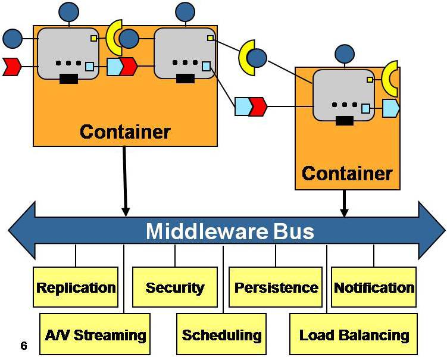

Il modello di programmazione ad oggetti promuove la progettazione e lo sviluppo di sistemi software modulari e permette di superare il tradizionale approccio monolitico alla costruzione del software migliorando la adattabilità, scalabità e manutebilità dei sistemi. Tuttavia, fin dal 1994 alcuni autori hanno rilevato che:
Object orientation has failed but component software is succeding (Udell)
Il concetto di oggetto non è infatti di per sè sufficiente a garantire processi di progettazione e di sviluppo in cui il sistema finale possa venire ottenuto come composizione di parti ad alta riusabilità già definite e disponibili. Nonostante i termini componente e oggetto siano spesso usati in modo intercambiabile, il concetto di componente software mira a denotare un ente che può essere prodotto acquisito e distribuito in modo indipendente e che può interagire con altri componenti per formare un sistema funzionante.
Parlare di componenti software significa allargare lo spazio concettuale di riferimento, introducendo caratteristiche e proprietà diverse da quelle che caratterizzano gli oggetti. In generale si può affermare che gli oggetti formano un mezzo particolarmente appropriato per costruire componenti. Come già avvenuto per gli oggetti, non esiste ancora una definizione di componente software universalmente accettata.
Nel 1996 la European Conference of Object Oriented Programming (ECOOP) coniò la seguente definizione: A software component is a unit of composition whith contractually specified interface and explicit context dependencies only. A software component can be deployed independently and is subject to composition by third parties.
Con questa definizione, un componente software viene inteso come una entità a sè stante e interconnettibile che permette la costruzione di sistemi per aggregazione di parti costruite in modo indipendente da fornitori diversi. Dunque, in generale, un oggetto non può dirsi automaticamente un componente.
|
Figure 1. Architettura a componenti

|